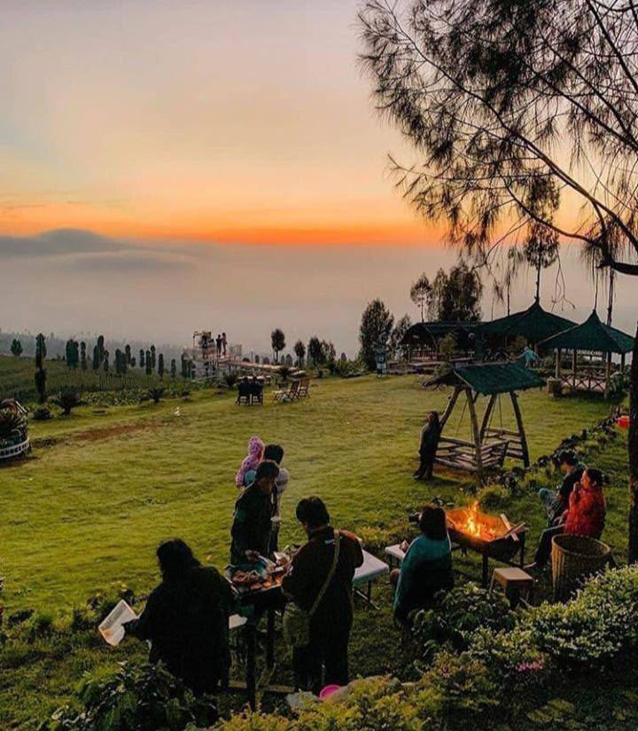
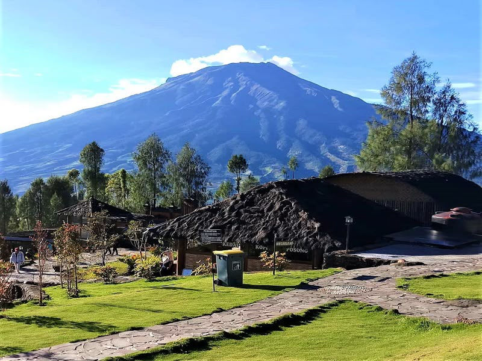
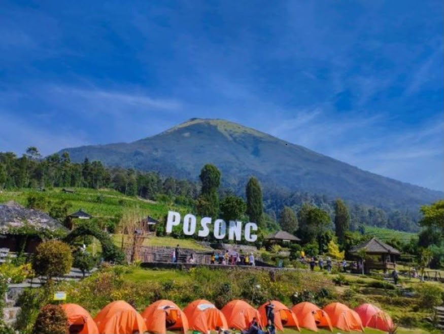

Spot Sunrise
Nikmati keindahan matahari terbit dengan pemandangan pegunungan dan lautan awan yang memukau.
Destinasi Pilihan
Nikmati keindahan alam, udara sejuk, dan pesona matahari terbit di Posong.
Jelajahi SekarangWisata Alam Posong merupakan destinasi wisata alam yang terletak di kawasan Desa Tlahab, Kecamatan Kledung, Kabupaten Temanggung, Jawa Tengah. Tempat ini terkenal dengan pemandangan pegunungan yang indah dan udara yang sejuk.
Dari Posong, pengunjung dapat menikmati panorama Gunung Sindoro dan Gunung Sumbing. Pemandangan matahari terbit menjadi salah satu daya tarik utama bagi wisatawan yang ingin menikmati keindahan alam.
Wisata Alam Posong cocok dikunjungi bersama keluarga maupun teman untuk berlibur, berfoto, dan menikmati suasana alam.

Nikmati keindahan matahari terbit dengan pemandangan pegunungan dan lautan awan yang memukau.

Pengunjung dapat menikmati panorama alam yang indah dengan latar Gunung Sindoro dan Gunung Sumbing.

Nikmati pengalaman berkemah dan merasakan suasana alam yang sejuk bersama teman atau keluarga.
Desa Tlahab, Kecamatan Kledung, Kabupaten Temanggung, Jawa Tengah.
Pagi hari untuk menikmati matahari terbit dan pemandangan pegunungan.